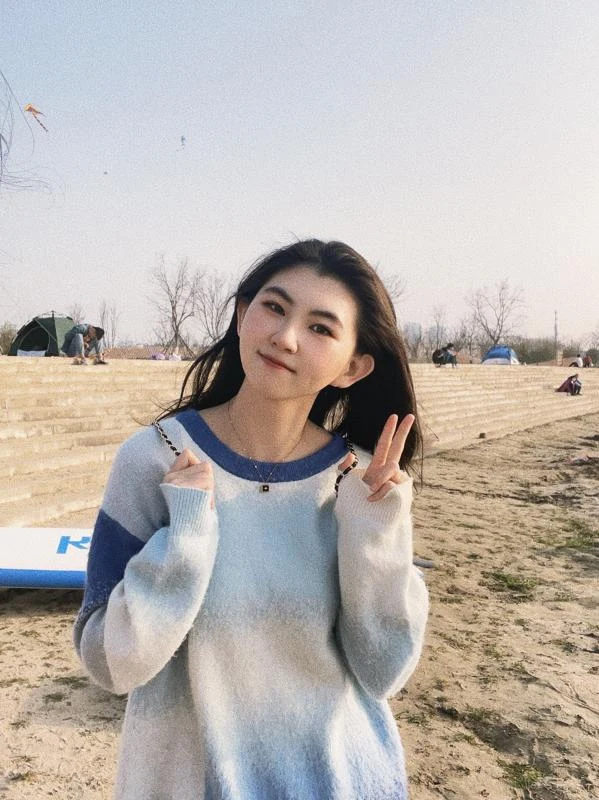

众米互联
高级 UI 设计师 · AI 康复产品体验与增长
01 / SELECTED WORK

BEHIND THE WORK02 / ABOUT ME
我是孟歆玮，一名在深圳的 UI/UX 设计师。拥有 6 年设计经验，经历覆盖物流数智化平台、AI 康复产品、政企系统、营销视觉与品牌全案。
我擅长把复杂业务流程转化为清晰的信息架构与高可用界面，也关注设计上线之后，如何持续改善用户体验与业务表现。
03 / EXPERIENCE
高级 UI 设计师 · AI 康复产品体验与增长
UX 工程师 · 物流数智化平台
UI 设计师 · 政企数字化与可视化产品
04 / LET’S CONNECT